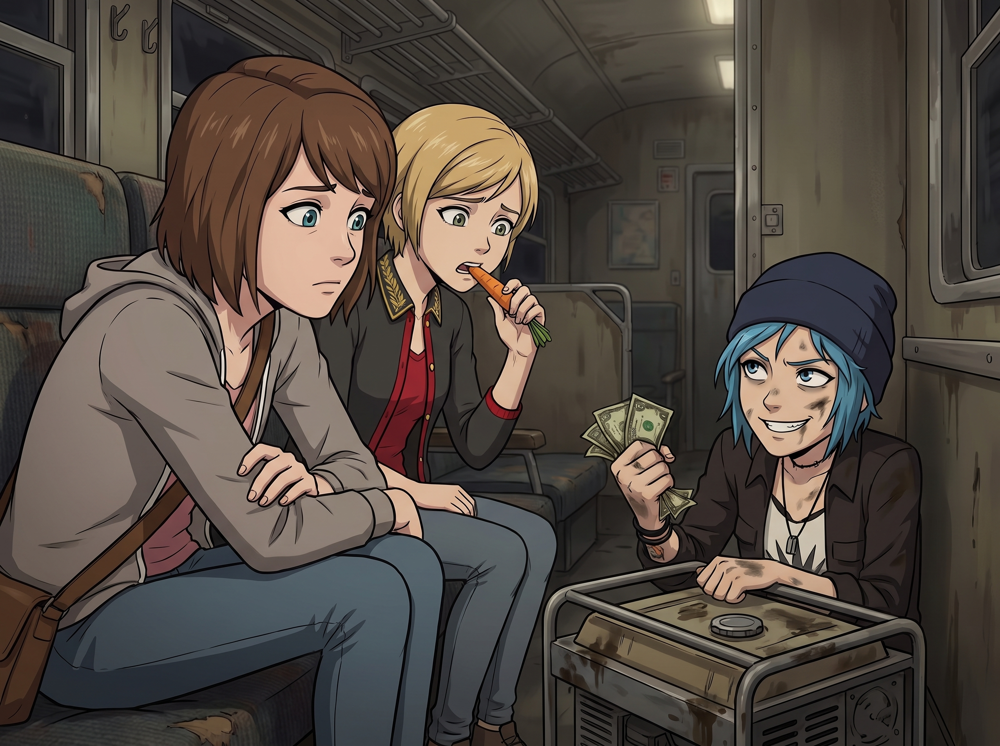

類比時代的越獄

就在 Victoria 絕望地啃著第三根生冷胡蘿蔔條，而 Max 準備接受命運去睡覺時，二號車廂的角落裡傳來了一陣沉悶的金屬碰撞聲。
「數位封鎖確實很強。」Chloe 滿臉油污地從一個廢棄的汽車發電機殼子裡抬起頭，手裡抓著一把沾著少許機油、皺巴巴的二十元美金鈔票，「但那丫頭忘了一件事：在奧林匹亞半島的伐木小鎮，現金才是唯一的真理。」
Max 和 Victoria 的眼睛瞬間亮了起來，彷彿在無盡的黑暗中看到了一座燈塔。
「Price，我這輩子從來沒有覺得妳手裡那些散發著機油味的零錢這麼迷人過！」Victoria 猛地把胡蘿蔔扔進垃圾桶，扯過一件風衣披在睡衣外面，「快！發動妳那輛破皮卡！我要吃那種滴著廉價油脂、會讓膽固醇飆升的垃圾食物！」
一、類比時代的越獄行動
十五分鐘後，一輛引擎轟鳴的破舊皮卡撕裂了奧林匹亞半島寧靜的雨夜。
這是一場純粹的類比越獄。沒有信用卡，沒有網路，沒有智慧型手機。三個被行政黑魔法逼瘋的傢伙，懷揣著 Chloe 靠修車和賣廢鐵攢下來的兩百塊美金私房錢，殺向了二十公里外唯一一家 24 小時營業的公路卡車餐廳。
一腳踹開餐廳搖搖欲墜的玻璃門，Chloe 像個打了勝仗的黑幫老大，將一把皺巴巴的現金拍在油膩的吧台上。
「聽著，把你們這裡最油膩、熱量最高的東西全端上來！」Chloe 豪氣干雲地大吼，「雙層牛肉起司堡！炸洋蔥圈！大份薯條！還要三大杯淋滿劣質鮮奶油的巧克力奶昔！」
當那座由碳水化合物和反式脂肪堆砌而成的垃圾食物金字塔端上桌時，這三個平時被 Kate 餵食有機蔬菜、被 Lily 強制控糖的傢伙，徹底失去了理智。
Victoria 完全忘記了什麼法式優雅，她雙手抓著一個比她臉還大的雙層起司堡，一口咬下去，發出了一聲近乎宗教體驗般的滿足嘆息：「天啊……這才是自由的味道！」
Max 也是左右開弓，一手抓著炸薯條，一手拿著奶昔狂吸。而 Chloe 則一邊往洋蔥圈上擠著致死量的番茄醬，一邊得意洋洋地嘲諷：「看到了嗎？這就是街頭智慧！」
二、身體的背叛
然而，這場越獄的勝利只維持了短暫的四十五分鐘。
在開車返回二號車廂的路上，皮卡車裡的氣氛發生了微妙的變化。原本興高采烈的歡呼聲消失了，取而代之的是一陣陣沉重的呼吸聲和痛苦的呻吟。
「呃……我的胃……」Victoria 捂著肚子，整個人蜷縮在後座，臉色慘白，「為什麼我覺得有塊石頭在我的腸子裡打滾？」
Max 靠在車窗上，感覺一陣陣反胃，額頭上冒出了冷汗：「我覺得……我們犯了一個致命的生物學錯誤。我們的身體……這半年來一直被 Kate 的溫和有機食物和 Lily 的精準營養配比滋養著……」
Chloe 握著方向盤的手也在發抖：「所以……我們那已經被徹底淨化的腸胃，根本承受不了這種突然的、工業級別的垃圾食物衝擊？我們被物理反噬了？！」
三、實習生的終極預判
當皮卡車終於歪歪扭扭地停在二號車廂門口時，三個人幾乎是連滾帶爬地摔下車，捂著肚子，像三隻鬥敗的流浪狗一樣互相攙扶著走進起居廂。
「藥箱……去找找有沒有胃藥……」Chloe 虛弱地指著吧台。
Max 拖著沉重的腳步走到吧台前，打開急救藥箱。 裡面沒有常見的胃藥，但卻端端正正地擺著一個全新的白色小藥瓶。藥瓶下面，壓著一張帶有淡淡雛菊香味的粉色便條紙。
Max 顫抖著手拿起便條紙。上面是 Lily 那娟秀、整齊、且充滿了無上威壓的字跡：
「致親愛的學姐們： 根據我的行為邏輯推演，在失去我的帳戶管制後，Price 學姐有 95% 的機率會動用她藏在廢棄發電機裡的 235 塊現金，帶領大家前往小鎮進行『高熱量報復性消費』。
鑑於妳們的腸道菌群已經無法分解劣質的反式脂肪，這瓶『高單位複合消化酵素』是特地為妳們準備的。請每人溫水吞服兩粒，可緩解急性胃痙攣。
另外，Price 學姐，關於您藏在發電機裡的現金，我已經在上一季度的稅務申報中，將其作為『廢品回收合法收入』進行了報備，並依法扣除了 15% 的預繳稅。所以您實際可用的餘額應該是 199.75 美元，請注意記帳哦。
祝妳們越獄愉快。 ——永遠關心妳們腸胃健康的 Lily」
安靜的車廂裡，只剩下三個人因為胃痛而倒抽冷氣的聲音。
Victoria 屈辱地吞下兩顆消化酵素，絕望地閉上了眼睛：「她甚至連發電機裡的錢都知道……我們這不叫越獄。我們只是在她劃定的放風區域裡，像小丑一樣跑了一圈。」
Chloe 癱在沙發上，看著天花板，眼角滑落了一滴不知是胃痛還是心碎的眼淚：「Max，把我的皮卡鑰匙沒收吧。這輩子，我都不想再吃漢堡了。我想吃 Kate 的苦瓜……」
Max 默默地吞下藥片，關掉了車廂裡的燈。 她們以為自己打贏了一場類比時代的游擊戰，卻不知道，實習生 Lily 早就站在了因果律的頂端，連她們的胃痛和稅金，都安排得明明白白。